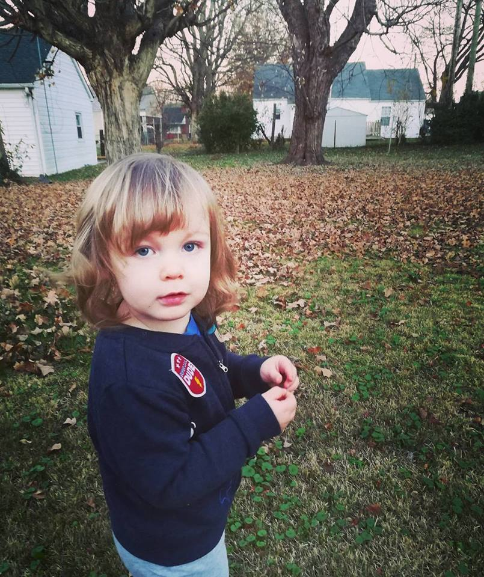

I live in Franklin, Kentucky.
I have been a licensed Massage Therapist for 10 years. While I love what I do, it has always been my dream to learn web development. I greatly enjoy the problem-solving aspects of coding and am challenging myself on a daily basis. My eventual goal is to learn enough to achieve a better job so that I can provide a better life for my family, especially my son.
I am the kind of person who functions better when I'm busy; my hobbies include working out, playing with my son, playing piano, and watching Frasier reruns.
I aspire to keep practicing, failing (because sometimes it's necessary to fail in order to become a better learner), solving problems and finding solutions in the following areas:
I would love to learn enough to be able to take on remote positions in web development (wouldn't everyone?).